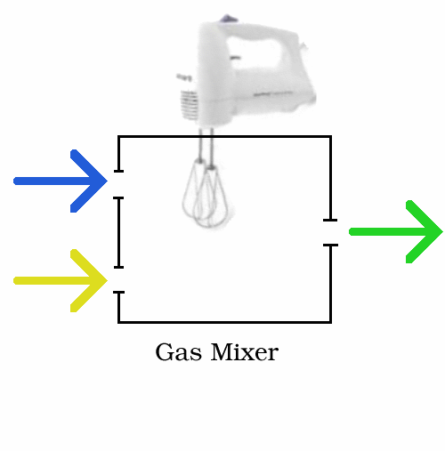

The Gas Mixer is a utility module for mixing gas streams. The module calculates the outlet composition and temperature based on the relative flow rates of the individual inlet streams. The mixture temperature is determined to match the sum of the total enthalpy of the individual inlet streams. The higher pressure input stream is assumed throttled to the lower pressure input stream and therefore the pressure of the outlet mixture is calculated to be the lesser of the inlet pressures. |
 |